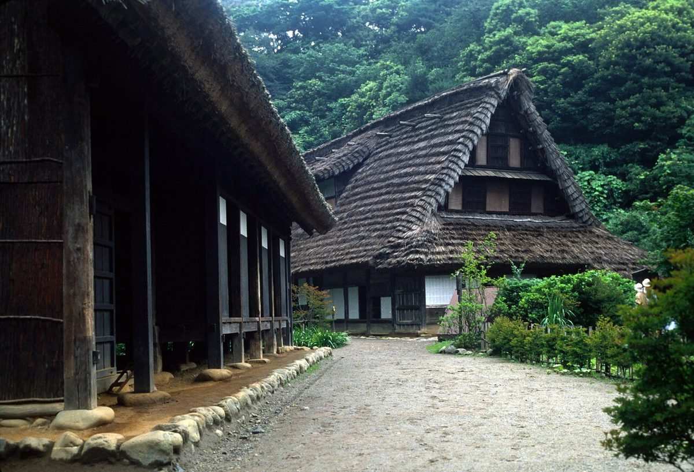
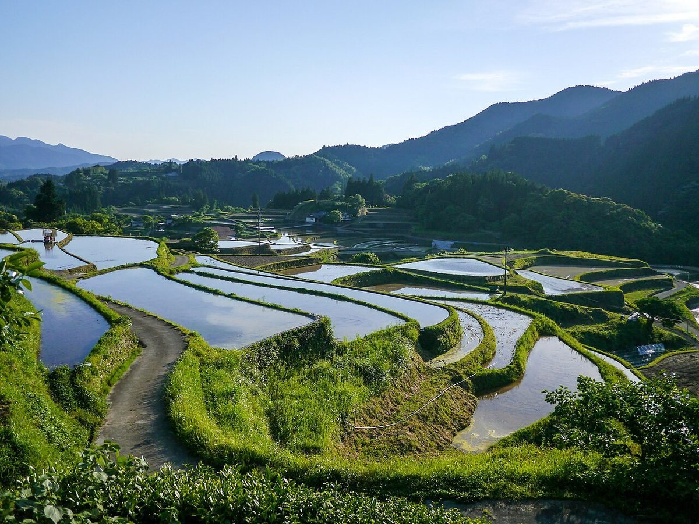
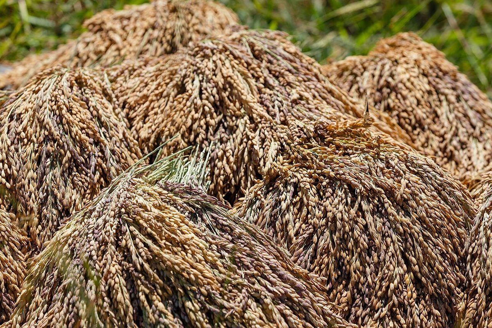
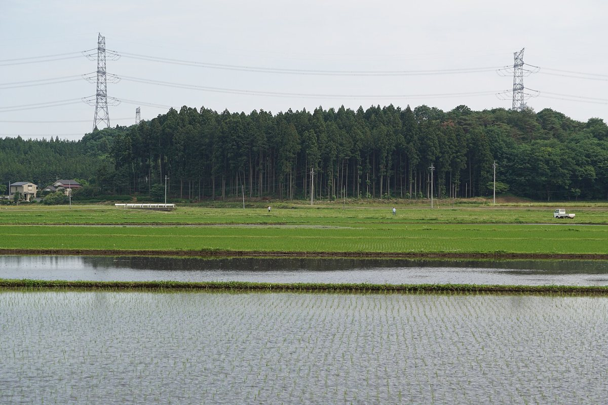
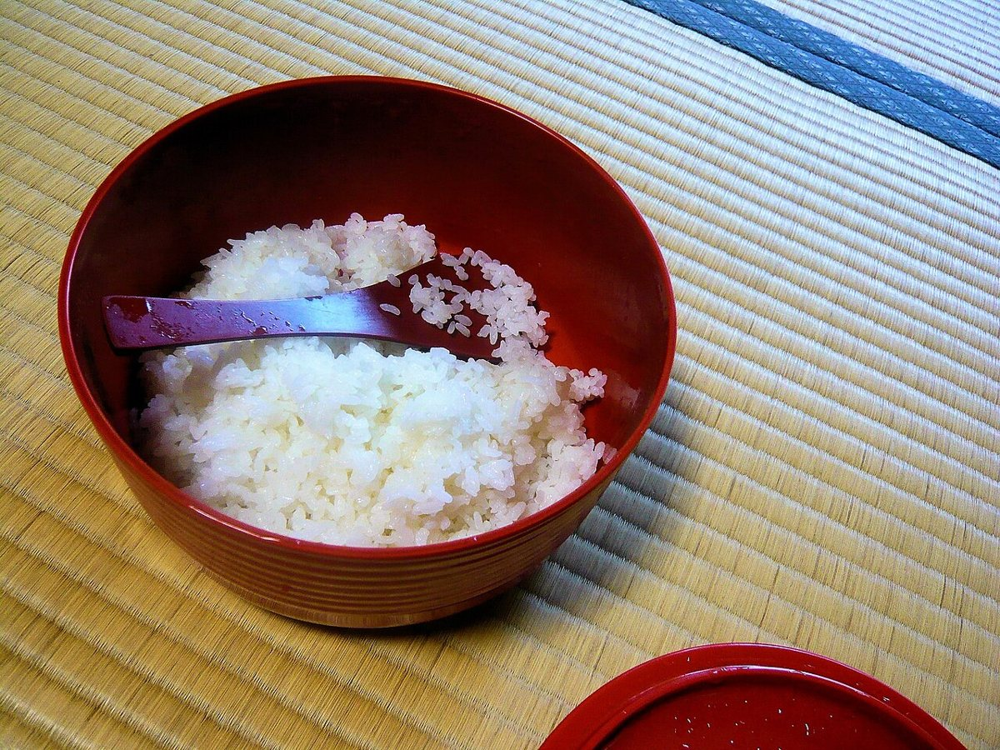
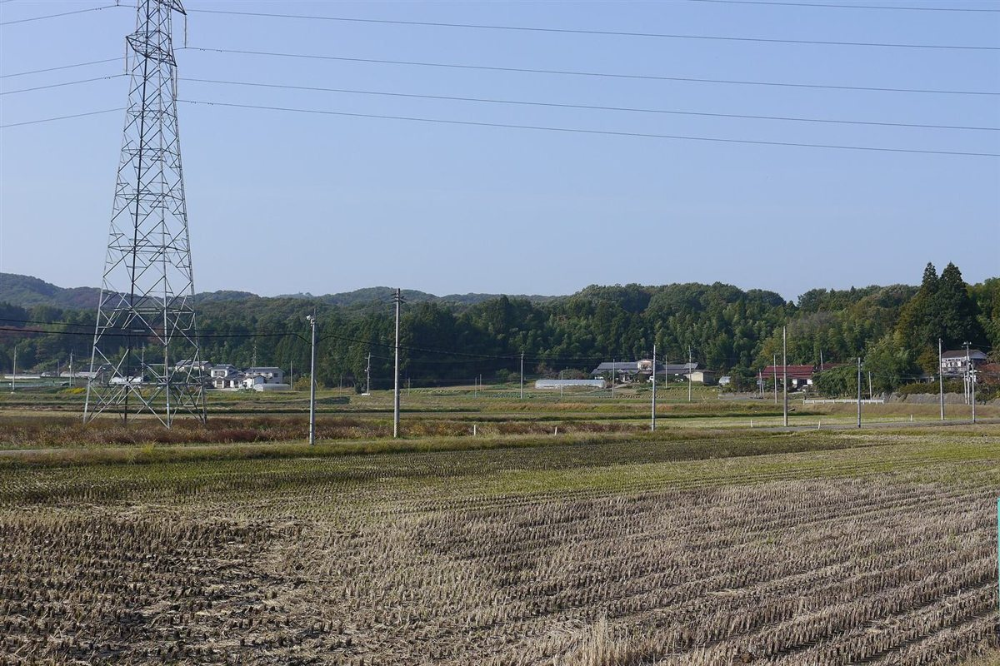
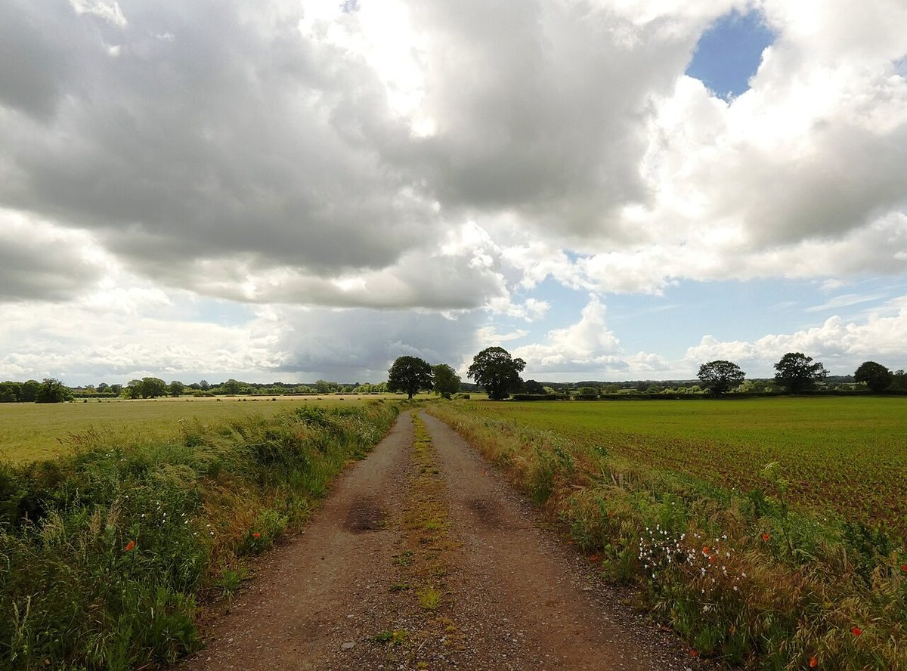

山口県萩市明木・古民家のおむすびカフェ
The 34Sassys cafe（ザサッシーズ）
旅の途中の縁側で、生米のぬくもりをひと口。
「人生という旅の途中に立ち寄る場所。」古民家で、心と身体がゆるむ時間をお届けします。
ABOUT
お店の由来・想い
萩市明木にある築100年ほどの古民家を活かしたカフェです。建物にはほとんど手を加えず、懐かしい雰囲気を残しているとされています。
お店を営むのは、家族で萩市へ移住された笹瀬香織さん。生米から作る米菓子「ふわもちこめかし」を、地域の特産品に育てたいという思いがあります。
地域の魅力を地域外の人にも知ってほしい。そして、都会で不安を抱える人に「こんな生き方もあるよ」と伝えたい。そんな想いが、この旅の途中の一軒に込められています。
- 将来はカフェでお菓子教室を開き、米菓子のレシピを共有したいと考えている
- 米から作るパンも提供したいと考えている
上記は公開されている取材記事・Instagramのプロフィールに基づく内容です。建物の築年数は記事により表記が異なるため「築100年ほど」としています。店名の意味は確認できていないため記載していません。




VOICE
口コミ
以下は実際のお客様の声ではありません。試作サンプルとして制作側が作成した「イメージ例」です。
古い家のなかで食べるおむすびは、ふしぎと落ち着きます。ほっとひと息つけました。
お米の甘みがやさしくて、おやつにも軽いお昼にもぴったり。旅の途中にまた寄りたくなる場所です。
のんびり過ごせました。



ACCESS
アクセス
| 住所 | 〒754-0411 山口県萩市明木3231 |
|---|---|
| 電話 | 準備中 |
| 営業時間 | 準備中 |
| 定休日 | 準備中 |
| @the34ricecupcake |
営業日は不定期とされています。お出かけ前にInstagramでご確認ください。